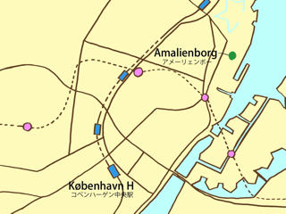

コンゲンス・ニュトーウ（Kongens Nytorv）からストーアストランストレーゼ（Store Strandstræde）を抜けると，アメーリェゲーゼ（Amaliegade）に出ます．この通りをそのまま進むと，アメーリェンボー宮殿にたどり着きます．アメーリェンボー宮殿は，中心にある石畳の広場を取り囲むようにある，４つの宮殿から成っています．1794年以降，この宮殿は王室の居城として使われてきました．
広場の中心から海側を向いて右手にある宮殿（クレスチャン9世宮殿）には，現在のデンマーク女王・マグレーデ２世とヘンレク王子が住んでいます．マグレーデ女王の誕生日である4月16日には，この広場は女王の誕生日を祝うデンマーク人でいっぱいとなり，宮殿のバルコニーから女王そして王室の人々が国民に挨拶をするといった場面も見られます．
広場では，衛兵の交代式が毎日１２時頃に行われています．
また広場の中心から海とは反対側を眺めると，ドーム型の屋根が特徴的な大理石教会（Marmorkirken）を見ることができます．また現在は，この広場から海側を眺めると，2005年にデンマークの海運会社メアスク（Maersk）からコペンハーゲン市へと寄贈されたオペラハウス（Operahuset）を眺めることもできます．